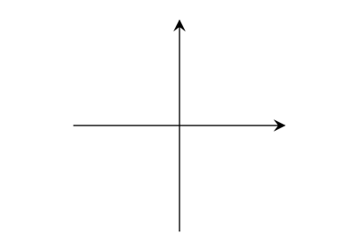
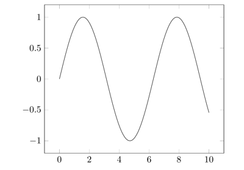
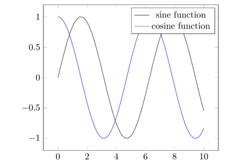

Note
Go to the end to download the full example code.
Directly using Tikz#
Directly use Tikz functionality, without pgfplots.
import pykz
pykz.figure()
rect = pykz.rectangle((-1, -1), (1, 1))
circle = pykz.circle((2, 0), (1), fill="red")
rect2 = pykz.rectangle((1, 1), (2, 3), fill="cyan")
# Dump the generated tikz code to the stdout.
print(pykz.dumps())
# Export your tex code as a standalone file
pykz.save("circles_and_squares.tex", standalone=True)
# You could also directly build the pdf
pykz.io.export_pdf_from_file("circles_and_squares.tex")
\documentclass[tikz, margin=5]{standalone}
\begin{document}
\begin{tikzpicture}
\draw(-1.000000000, -1.000000000) rectangle (1.000000000, 1.000000000);
\draw[fill=red](2.000000000, 0.000000000) circle (1);
\draw[fill=cyan](1.000000000, 1.000000000) rectangle (2.000000000, 3.000000000);
\end{tikzpicture}
\end{document}
'circles_and_squares.pdf'
Alternatively, output it to png
pykz.io.export_png_from_file("circles_and_squares.tex")
Or, save the Tikz code to a temporary file, compile it, and open the pdf in the default viewer.
This would be the equivalent to plt.show()
pykz.preview()
Total running time of the script: (0 minutes 0.294 seconds)
Related examples

Low-level Tikz commands

Minimal working example

Basic customization